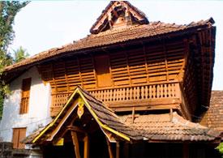

Kottayam
Places of Interest
Kumarakom
 Kumarakom, situated 13 Kms away from Kottayam is a sleepy little village on VembanadLake in Kerala. It offers wide variety of flora, exotic sightseeing, boating and fishing experience. The bird sanctuary spread across 14 acres is new and safe home for many migratory birds like Siberian stork, wild duck etc. They live with other birds in flocks such as darters, herons, waterfowls; cuckoos are fascinating sight for the visitors. The beautiful paradise stocked with mangrove forests, emerald green paddy fields and coconut trees comprises with water ways and canals adorned with white lilies enchants the tourist from world over. The land is famous for it’s painstakingly hand craft each exquisite piece still in a traditional way. VemanadLake is home to several types of marine life exclusively the Chemeen (Prawns), the Konju (Tiger Prawns) and Karimeem.
Kumarakom, situated 13 Kms away from Kottayam is a sleepy little village on VembanadLake in Kerala. It offers wide variety of flora, exotic sightseeing, boating and fishing experience. The bird sanctuary spread across 14 acres is new and safe home for many migratory birds like Siberian stork, wild duck etc. They live with other birds in flocks such as darters, herons, waterfowls; cuckoos are fascinating sight for the visitors. The beautiful paradise stocked with mangrove forests, emerald green paddy fields and coconut trees comprises with water ways and canals adorned with white lilies enchants the tourist from world over. The land is famous for it’s painstakingly hand craft each exquisite piece still in a traditional way. VemanadLake is home to several types of marine life exclusively the Chemeen (Prawns), the Konju (Tiger Prawns) and Karimeem.
Elaveezhapoonchira
 Elaveezhapoonchira , a hill station which is 60 kms away from Kottayam is gaining tourist importance. Elaveezhapoonchira means valley where leaves dont fall and is names so because the place has no trees. This is also one of the best places in Kerala to witness both the sun rise and sunset.
Elaveezhapoonchira , a hill station which is 60 kms away from Kottayam is gaining tourist importance. Elaveezhapoonchira means valley where leaves dont fall and is names so because the place has no trees. This is also one of the best places in Kerala to witness both the sun rise and sunset.
Locked between three beautiful hillocks Mankunnu, Kudayathoormala and Thonippara, Poonchira is a place of picturesque charm. Legends say that the pool here was a bathing place for Panchali the heroine of Mahabharata. The beautiful valleys of Poonchira spread across thousands of acres and the verdant landscape punctuated by the gigantic hills, is a unique feature of this land. During monsoon season, the water that gets accumulated over a wide area looks like a placid lake, reflecting the rain clouds and the majestic mountains. The pristine beauty of nature is preserved almost intact in this small region.
Vaikom
Vaikom is situated west of Kottayam district. The place has got historical importace due to ‘Vaikom Satyagraham’ which was a movement in Travancore against untouchability a practice in which ostracizing a minority endogamous group from the mainstream by social custom or legal mean in which Mahatma Gandhi and Periyar Ramasami participated .Mahadeva temple, also known as Thekkan Kashi (Southern Varanasi),is situated here and is famous for Ashtami (vailattashtami).
Poonjar Palace
The Poonjar Palace is a glorious testimony to the regal opulence of a bygone era. Within the palace walls is an extraordinary royal collection of antiques and exquisite furniture including a palanquin, a thoni - carved out of a single piece of wood - for Ayurvedic massages, huge chandeliers, palm leaf engravings, jewel boxes, varieties of lamps, sculptures of Nataraja (the dancing Siva), grain measures, statues and weapons.A unique conch preserved here is taken out once a year for ritualistic purposes.
Vagamon
 Situated 64 Km away from Kottayam is a trekkers paradise. Wagamon also has distinction as the most literate district of India.A tourist spot surrounded by the greenery of tea gardens, Hills beautifully covered with green grasses, velvet lawns and the cool mountain air make Wagamon a perfect holiday retreat. Wagamon comprises of stunningly beautiful series of gentle hills, valleys, waterfalls and green slopes and truly a scenic spot for tourists.The chain of three hills - Thangal Hill, Murugan Hill and Kurisumala - makes Wagamon a place worth visiting.
Situated 64 Km away from Kottayam is a trekkers paradise. Wagamon also has distinction as the most literate district of India.A tourist spot surrounded by the greenery of tea gardens, Hills beautifully covered with green grasses, velvet lawns and the cool mountain air make Wagamon a perfect holiday retreat. Wagamon comprises of stunningly beautiful series of gentle hills, valleys, waterfalls and green slopes and truly a scenic spot for tourists.The chain of three hills - Thangal Hill, Murugan Hill and Kurisumala - makes Wagamon a place worth visiting.